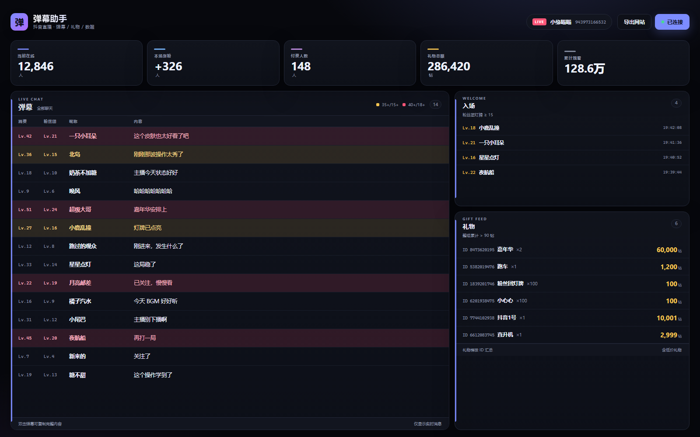
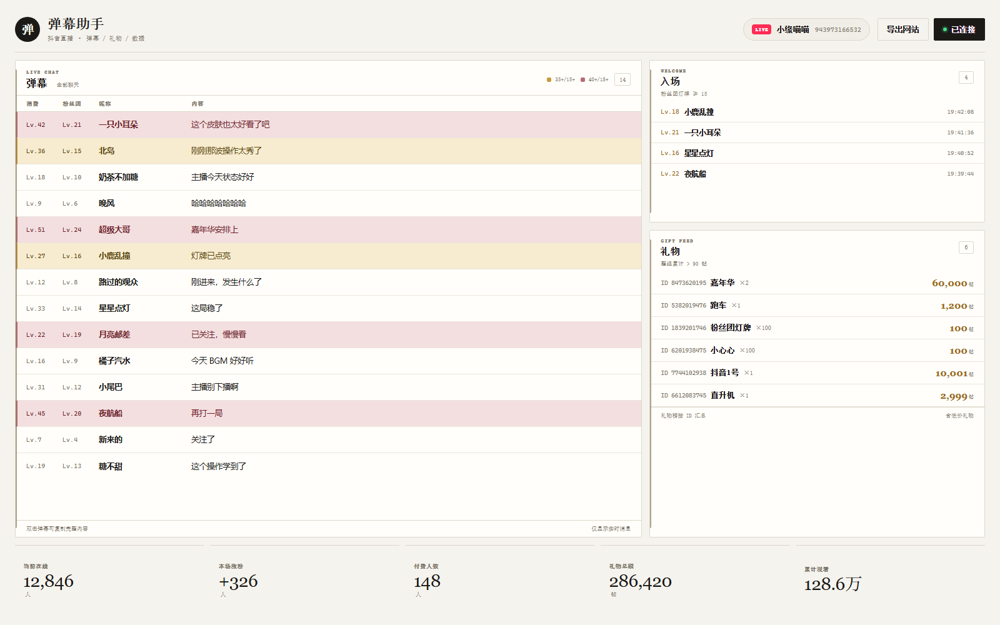
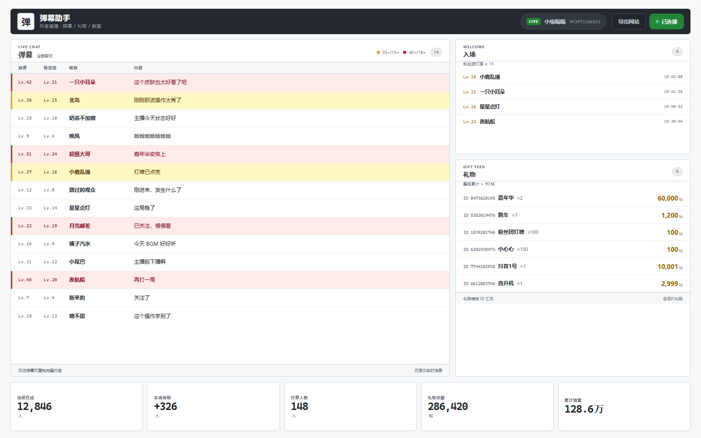
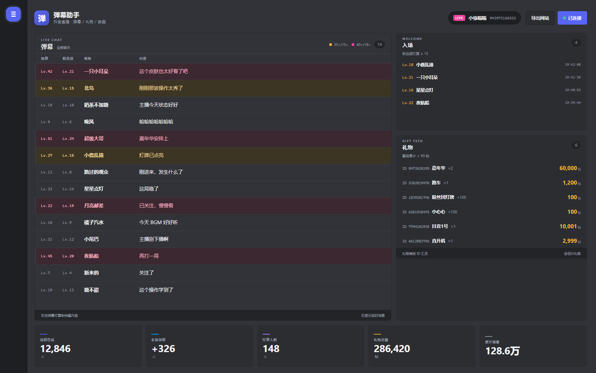
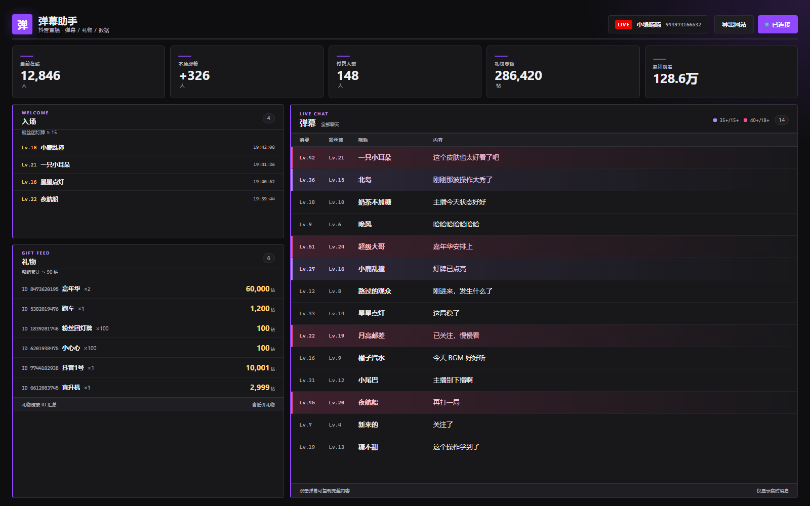
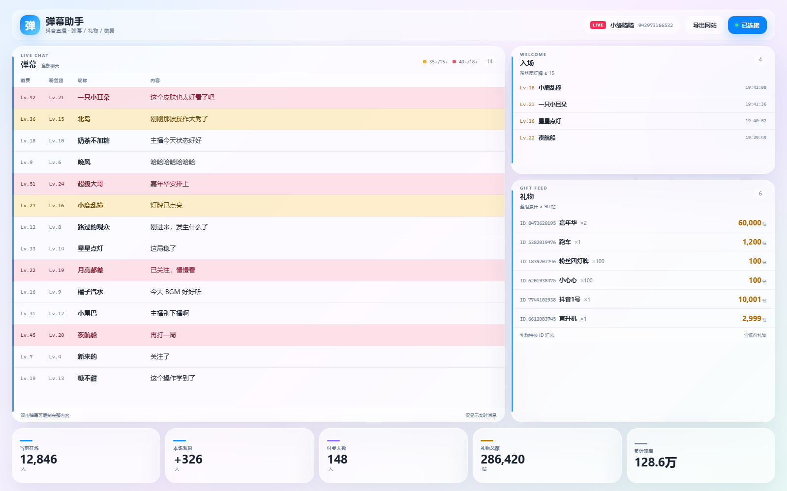
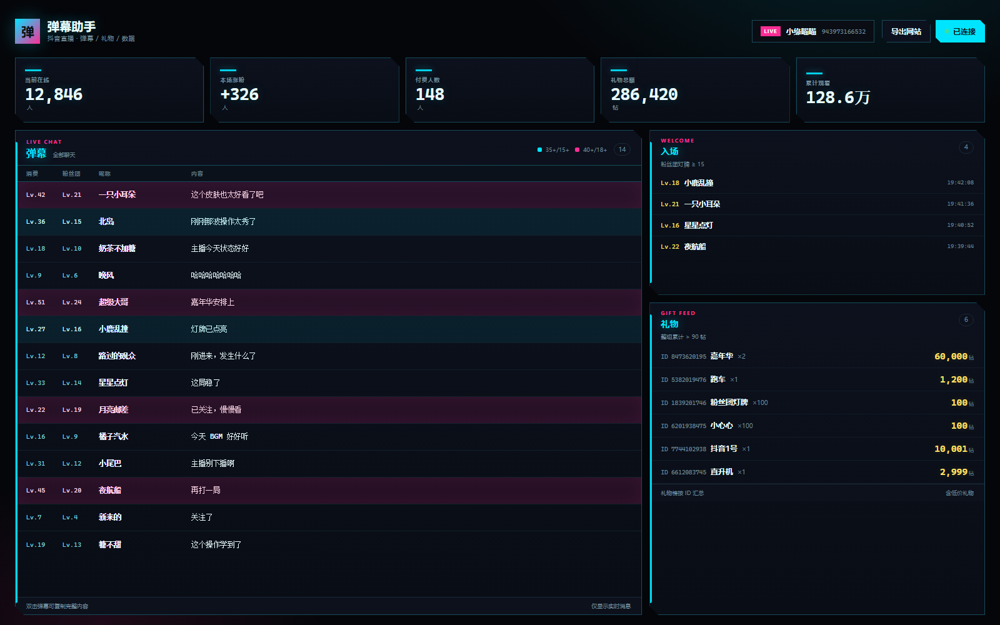
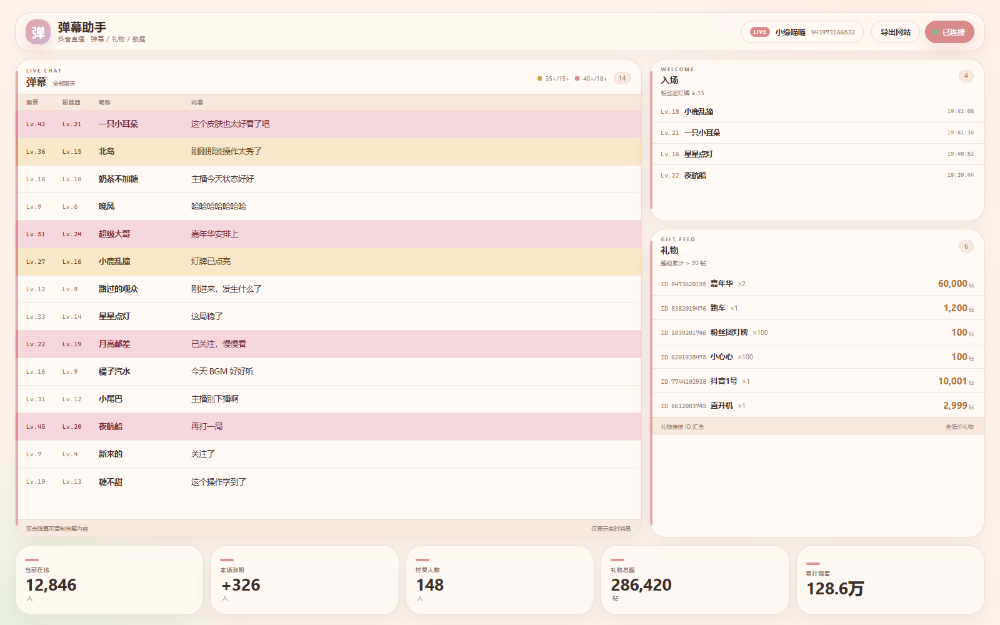
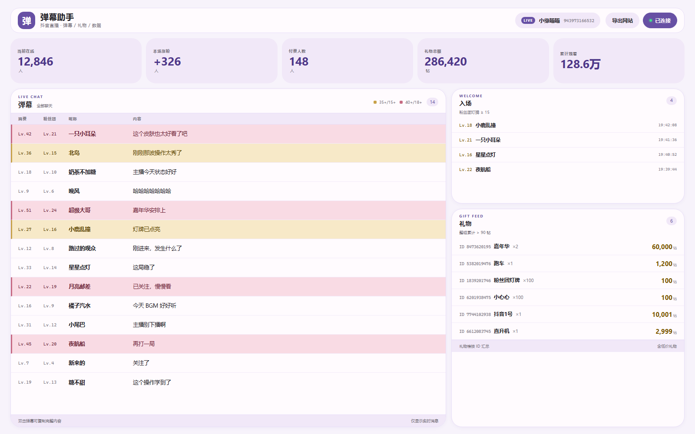
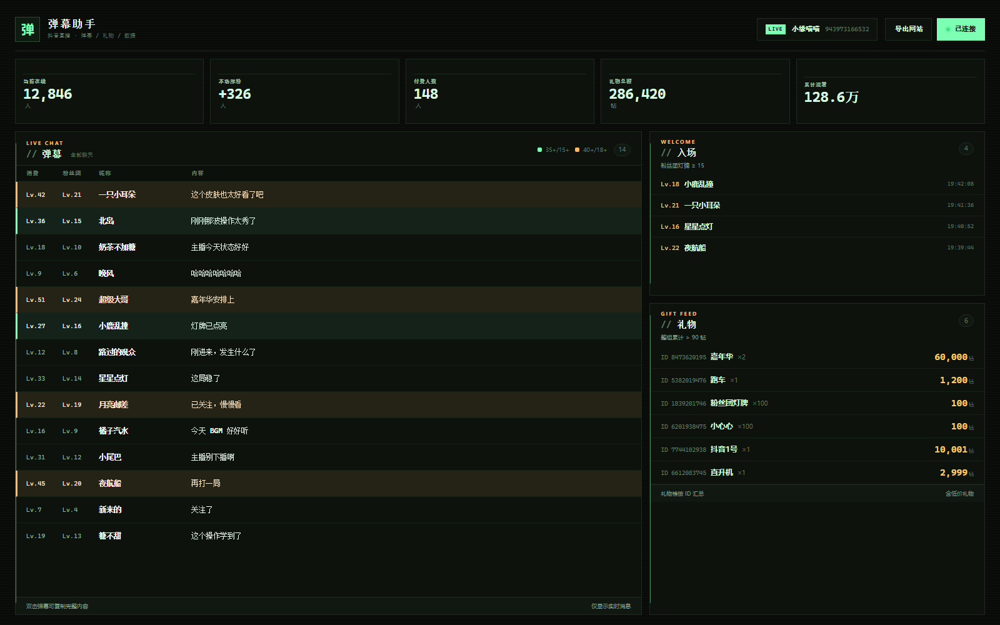

同一套功能与数据，十种视觉语言。点开可看 1600×1000 原图。

接近 Linear / shadcn-admin 的深色工作台：低饱和蓝紫、细边框、顶部指标，适合长时间盯盘。

暖白纸面、衬线标题、极轻阴影；像一本直播记录册，信息密度适中，适合阅读和复盘。

GitHub Primer 风格：深色顶栏、6px 圆角、蓝色链接、紧凑表格；ID 和数据列的扫读效率最高。

Discord 式深灰分层和左侧栏，弹幕是绝对主角；高亮行用暗金/暗红，不打断聊天节奏。

Twitch 式黑紫配色、LIVE 标签和顶部数据条；视觉更像直播控制台，适合投屏或平板。

macOS / Fluent 式半透明玻璃卡片和大圆角；背景有柔和渐变，适合女性主播或轻量场景。

赛博朋克式黑底、青色霓虹和洋红高亮，切角卡片；游戏/电竞直播间的辨识度最强。

奶油白、豆沙粉和燕麦色，圆润卡片和柔和阴影；亲切但不幼稚，适合陪伴型直播间。

Material You 的淡紫表面、tonal 卡片和胶囊按钮；顶部大指标像手机小组件，移动感强。

Bloomberg / 终端风格：等宽字体、磷光绿、细网格，信息密度最高；适合逐条复盘和查 ID。